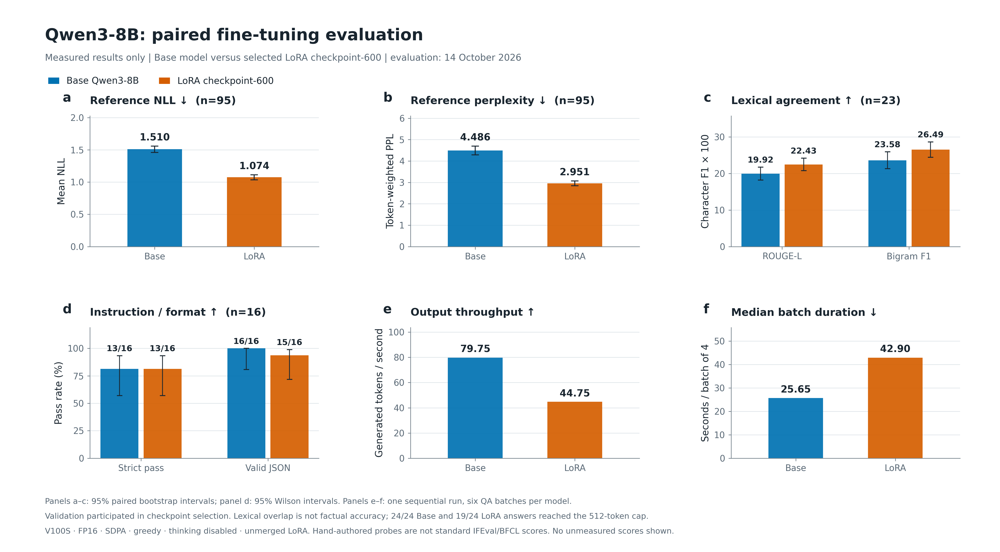
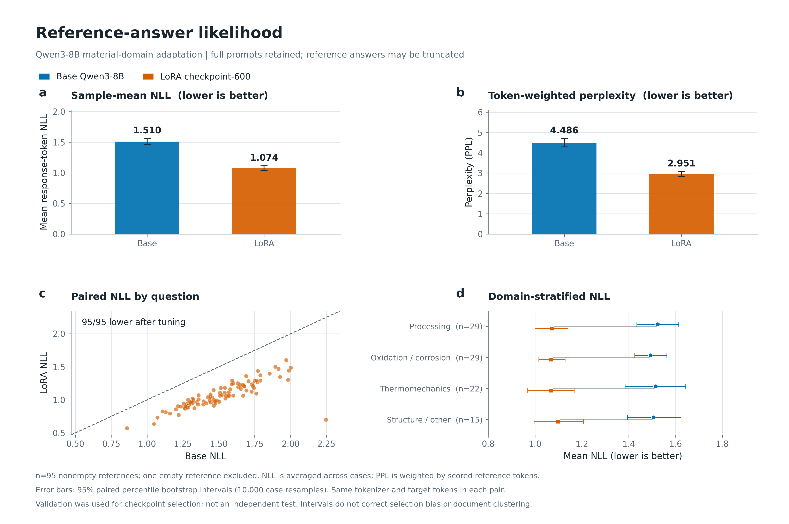
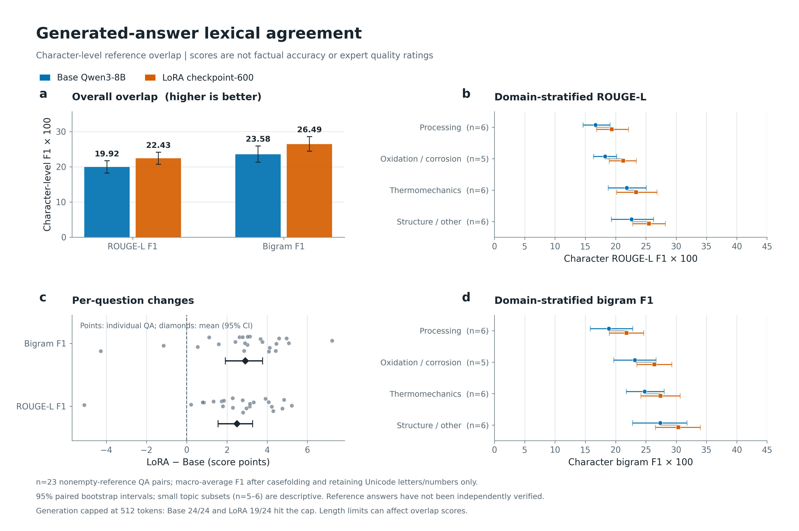
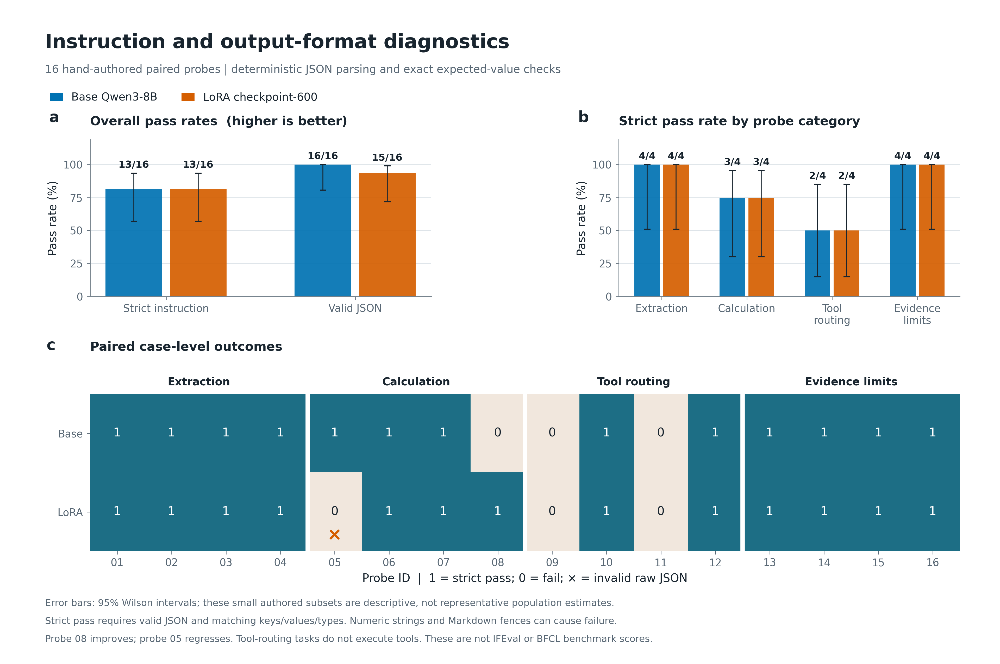
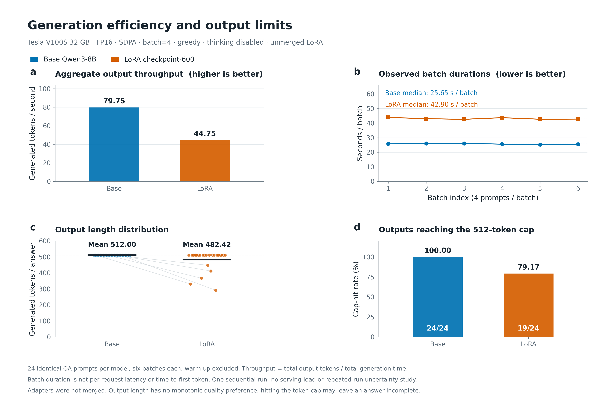

源评测：2026-10-14 · 蓝色为原始模型，橙色为LoRA checkpoint-600。没有重新运行训练或推理。
验证集参与过选模，非独立测试；文本重合度不代表事实准确率。完整图注与统计限制 · 绘图数据
6个子图汇总NLL、PPL、文本重合、指令/格式通过率及吞吐/批次耗时。不同量纲分别作图，不合成为总分，也不使用雷达图混合尺度。

95条非空参考，保留完整prompt；分别展示逐样本等权NLL、token加权PPL、同题散点及4个主题分组。它们衡量参考答案似然，不是生成答案事实正确率。

23组非空参考问答的字符ROUGE-L与二元组F1，以及主题分组和逐题差值。新增主题二元组分组由已有逐题分数聚合，未重新进行GPU推理。负向变化不隐藏。

16组自编题：总体通过率、4类子任务及逐题成对结果。柱上标成功数/总数，误差线为Wilson区间。数字字符串或Markdown围栏可能导致严格评分失败，不能直接解释为计算错误。

同一V100S环境下的输出吞吐、6批实际耗时、24题输出长度及512-token触顶率。LoRA未合并；批次耗时不是单请求延迟，未测TTFT或P95请求延迟。
